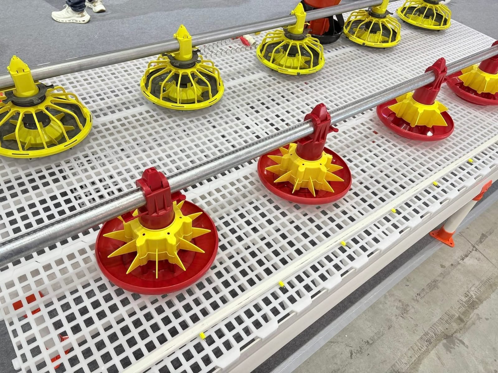
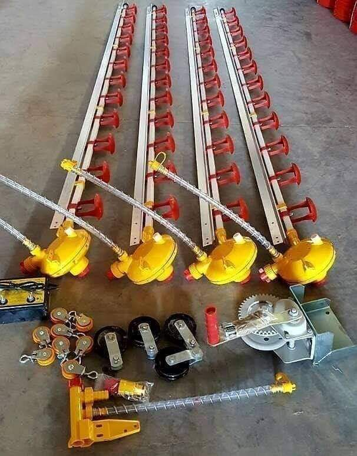
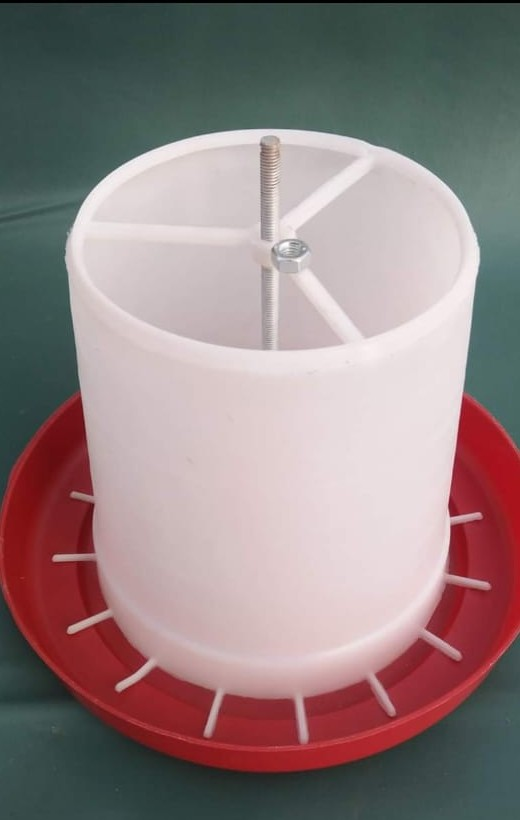
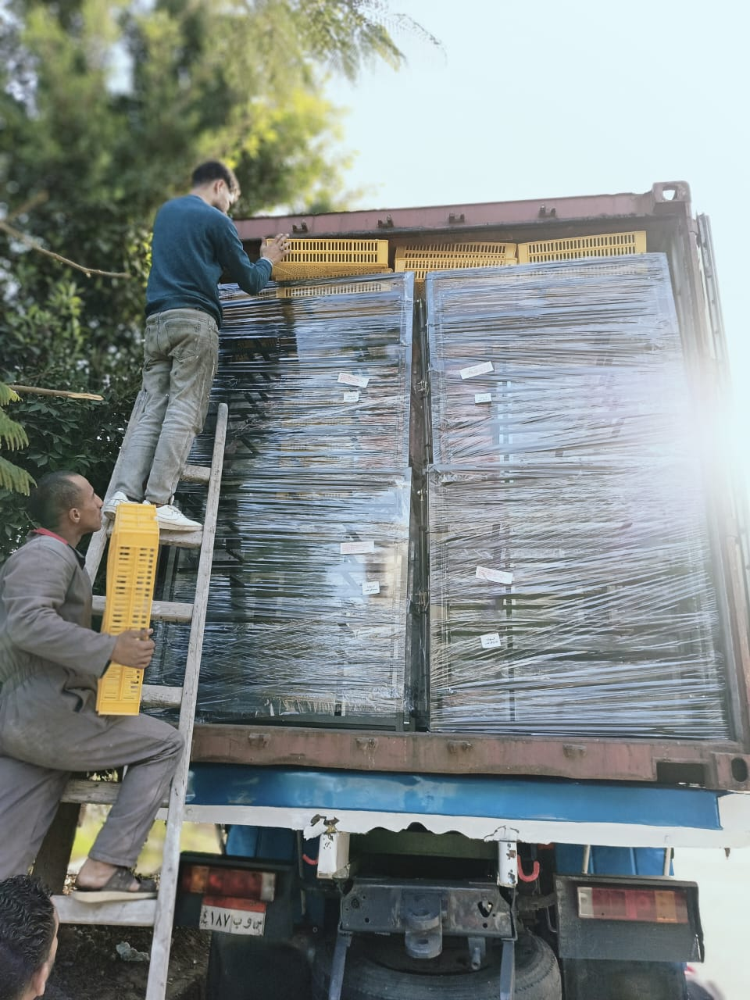
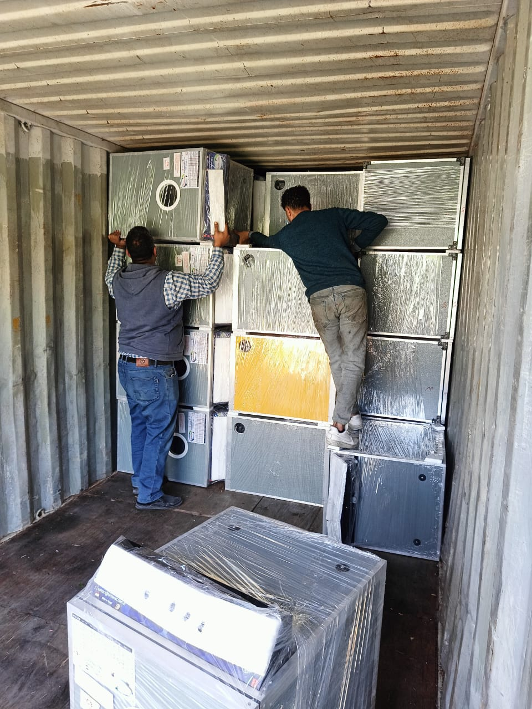

Oscar Poultry Supplies
ماكينات تفريخ وتجهيزات مزارع الدواجن في مكان واحد
نقدم حلول التفريخ ومعدات وتجهيزات مزارع الدواجن للمزارع والموزعين والمشروعات الجديدة، مع الشحن داخل مصر، والتركيب، وخدمة ما بعد البيع. أقوى خط لدينا هو التفريخ، مع توفير باقي الأنظمة الأساسية لتجهيز المزرعة بكفاءة ووضوح.
- شحن داخل مصر وتجهيز للطلبات الخاصة بالمزارع والموزعين
- تركيب ومتابعة وخدمة ما بعد البيع للمعدات الأساسية
- حلول تفريخ، تغذية، شرب، تهوية، تدفئة، ومستلزمات تشغيل
حلول عملية من أرض الواقع
نخدم المزارع والموزعين والمشروعات الجديدة بحلول تفريخ وتجهيز كاملة
الصور هنا ليست عرضًا تجميليًا فقط، بل لقطات من المعارض، الشحن، ومراجعة الشحنات والمعدات، لتوضيح أن أوسكار تعمل فعليًا في التوريد والتجهيز وخدمة السوق المحلي وأسواق التصدير.


الشحن والتركيب وخدمة ما بعد البيع
مسار واضح من اختيار المعدة وحتى التسليم والمتابعة بعد التشغيل
تفريخ
الخط الأقوى والأهم
ماكينات تفريخ وسعات متنوعة مع خبرة عرض وتجهيز تناسب المشاريع والمزارع.
خدمة
شحن وتركيب ومتابعة
نرتب الطلب، وندعم التركيب، ونوفر خدمة ما بعد البيع للخطوط الأساسية.
حلول
تجهيز مزرعة كاملة
تفريخ، تغذية، شرب، تهوية، تدفئة، ومستلزمات تشغيل في مسار شراء واحد.
سوق
للمزارع والموزعين
مناسب لأصحاب المزارع، الموزعين، ومن يبدأ مشروع دواجن جديد.
Why Oscar?
لماذا يختار العملاء Oscar Poultry Supplies؟
الهدف من الموقع ليس العرض فقط، بل بناء ثقة واضحة وسريعة توصل العميل إلى الحل المناسب وطلب عرض السعر بسهولة.
مصنع ومعرض
وجود مصنع ومعرض يمنح العميل ثقة أكبر في القدرة على العرض والتجهيز والمتابعة الفعلية.
تصنيع واستيراد وتوريد
نجمع بين التصنيع والاستيراد والتوريد لتغطية الاحتياجات الأساسية والمتخصصة في قطاع الدواجن.
شحن وتركيب
نرتب عمليات الشحن ونساعد في التركيب لتسهيل بدء التشغيل للمزرعة أو المشروع الجديد.
خدمة ما بعد البيع
نهتم بالمتابعة بعد التسليم، خصوصًا في خطوط التفريخ والتجهيزات الأساسية للمزارع.
خدمة للمزارع والموزعين
نخاطب احتياجات الشراء اليومي وطلبات الجملة والتجهيز الكامل للمشروعات.
معارض وتصدير
مشاركات فعلية في المعارض وتجهيز شحنات تصدير تدعم صورة الشركة ككيان عامل على أرض الواقع.
الأقسام الأساسية
ابدأ بأقوى خط لدينا ثم أكمل تجهيز المزرعة حسب احتياجك
رتبنا الأقسام حسب الأولوية البيعية، مع إبراز التفريخ أولًا ثم الأنظمة المساندة ومستلزمات التشغيل.
01 | التفريخ
ماكينات التفريخ
أهم وأقوى قسم لدينا، مناسب للمشروعات الجديدة، مزارع الإنتاج، والعملاء الباحثين عن حلول تفريخ عملية بسعات متنوعة.

02 | التغذية
أنظمة وخطوط التغذية
حلول بان فيدر وخطوط علف تساعد على انتظام التغذية وسهولة التشغيل داخل العنابر.

03 | الشرب
أنظمة الشرب وخطوط المياه
خطوط نبل ومنظمات ومكونات توزيع مياه للمزارع التي تحتاج تشغيلًا أكثر استقرارًا وتنظيمًا.

04 | التهوية والتبريد
التهوية والتبريد
شفاطات ومراوح وخلايا تبريد للمساعدة في تحسين بيئة العنابر وحركة الهواء.

05 | التدفئة
أنظمة التدفئة
هيترات وحلول تدفئة تساعد على ثبات بيئة التشغيل داخل العنابر في الفترات الباردة.

06 | مستلزمات المزارع
مستلزمات المزارع والتشغيل اليومي
علافات ومساقي يدوية ومستلزمات تشغيل يومية للمزارع والمحال والموزعين.

07 | أقسام أخرى
بطاريات، رشاشات، موازين، رياشات، مضخات، ومولدات
نوفر أقسامًا إضافية تكمل احتياجات التشغيل والتجهيز حسب نوع المشروع أو نشاط العميل.
لمن نخاطب هذا الموقع؟
رسالة واضحة لثلاث فئات أساسية بدون تشتيت
صممنا الرسائل الأساسية لتخدم صاحب المزرعة، والموزع، ومن يبدأ مشروع دواجن جديد، مع الحفاظ على رسالة موحدة: لدينا حلول تفريخ وتجهيزات ومستلزمات تشغيل في مكان واحد، مع مسار واضح لطلب عرض السعر والتواصل.
أصحاب المزارع
الموزعون
المشروعات الجديدة
صاحب المزرعة يجد الحلول الأساسية للتشغيل والتجهيز في ترتيب واضح
الموزع يصل سريعًا إلى الأقسام التي تناسب طلبات الجملة والاحتياجات المتكررة
صاحب المشروع الجديد يفهم من أين يبدأ وكيف يطلب عرض سعر مناسب
الرسالة الأساسية تبقى بسيطة: ماكينات تفريخ وتجهيزات دواجن مع خدمة ومتابعة
دلائل الثقة
أصول حقيقية من نشاط الشركة لدعم قرار الشراء
استخدمنا صور المعارض والشحنات والمخزن والمعرض بشكل مقصود لإظهار أن النشاط فعلي ويغطي التوريد والتجهيز والتصدير.

